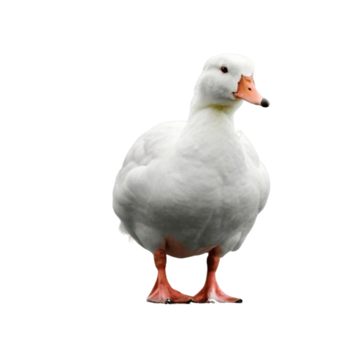

Patitos de pelucia
Os patitos de pelucia são coisas q a thai adora, ela ama ver e quer ter um monte, ela ja me mandou varios, hj foi um patobanana
se eu pudesse eu daria todos as pelucias q ela quiser, inclusive daria um pato hello kitty e um da kurume, só pq ela gosta ksks
ela fica feliz, e eu adoro ver ela feliz

Patito de Verdade
Patitos de verdade, devem ser todos protegidos a thais odeia q maltratem eles, e vai bater em qualquer um que maltratar patinhos
Ela vai criar um patinho e vai dar mto amor e carinho pra ele,n vai deixar ele ser maltratado
E vai sair por ai cuidando de todos os patitos e animaizinhos